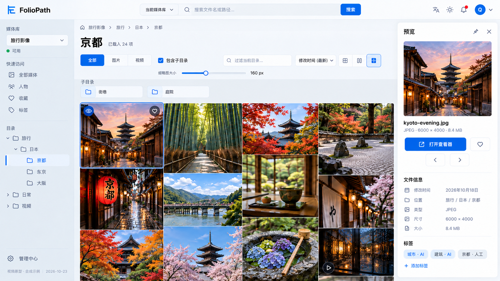
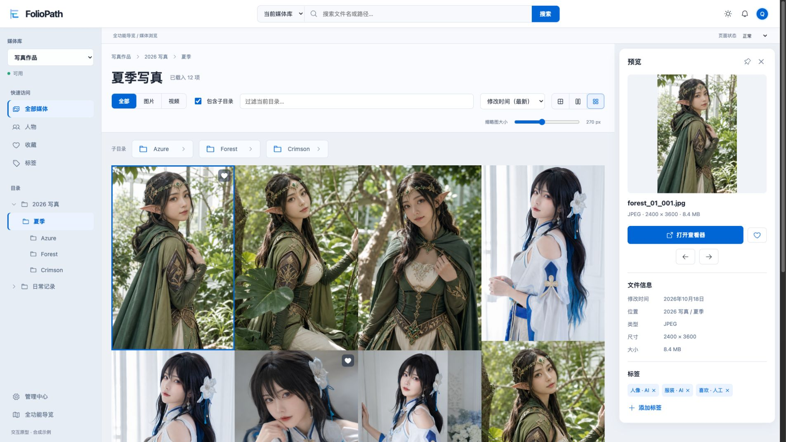

<!doctype html><html lang="zh"><meta charset="utf-8"><title>Source / Implementation</title><style>*{box-sizing:border-box}body{margin:0;font:14px system-ui;background:#e6ebf2;display:grid;grid-template-columns:1fr 1fr;gap:8px}figure{margin:0}figcaption{padding:10px;background:white}img{width:100%;height:auto;display:block}</style><figure><figcaption>视觉来源：最后一张分层工作台稿（旅行示例）</figcaption></figure><figure><figcaption>交互实现：同一结构（现有合成写真素材）</figcaption></figure></html>
